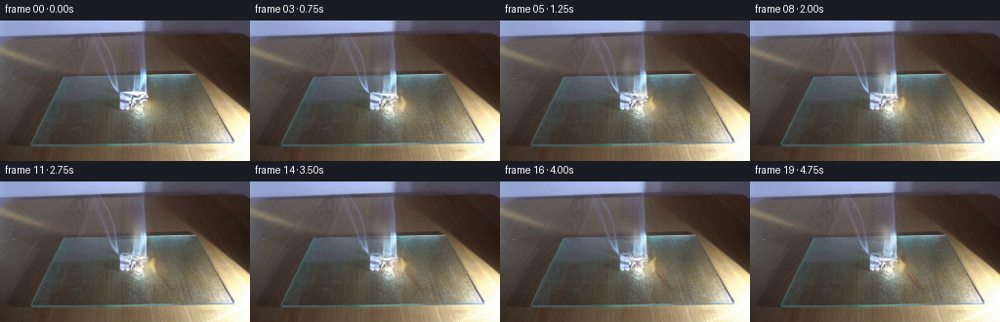
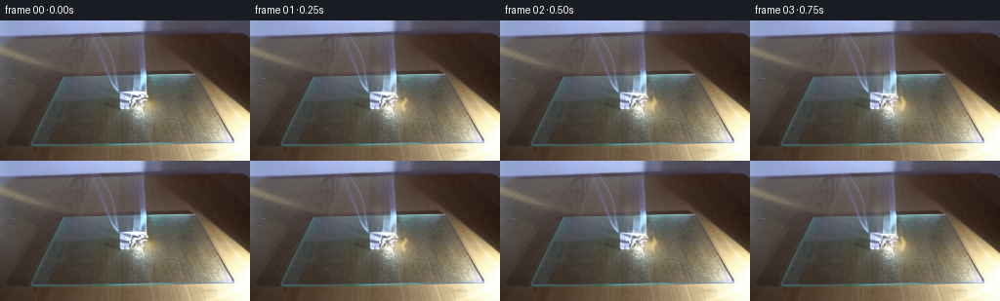

CODING AGENTS AS PIXEL WORLD MODELS
traex/DeepSeek-V4.1-Flash · 0140
点击播放 · 原生 RGB 像素
此结果可播放，但该运行尚未通过最终提交审核。页面展示不代表评测通过。
逐轮保存的候选
回放视频、检查图与代码变化。
每份候选均可单独播放。实际图片检查记录在下方工具轨迹中。
候选 01播放与检查图
点击播放 · 原生 RGB 像素


展开代码变化
--- 上一保存版本
+++ 本次保存版本
@@ -0,0 +1,251 @@
+from pathlib import Path
+
+import cv2
+import numpy as np
+from scipy.ndimage import gaussian_filter
+
+import artifact_io
+
+
+ROOT = Path(__file__).resolve().parent
+WIDTH, HEIGHT, FRAMES, FPS = 256, 144, 20, 4
+
+
+def smoothstep(edge0, edge1, value):
+ x = np.clip((value - edge0) / (edge1 - edge0), 0.0, 1.0)
+ return x * x * (3.0 - 2.0 * x)
+
+
+def make_noise_bank(seed, count=9, coarse=(12, 22)):
+ """Coherent, tileable-looking noise keyframes for smoke detail."""
+ rng = np.random.default_rng(seed)
+ bank = []
+ for _ in range(count):
+ base = rng.normal(0.0, 1.0, (coarse[0] + 2, coarse[1] + 2)).astype(np.float32)
+ base = gaussian_filter(base, 0.75, mode="reflect")
+ image = cv2.resize(base, (WIDTH, HEIGHT), interpolation=cv2.INTER_CUBIC)
+ image = gaussian_filter(image, 1.1, mode="reflect")
+ image = (image - image.mean()) / (image.std() + 1e-6)
+ bank.append(image.astype(np.float32))
+ return bank
+
+
+def sample_noise(bank, phase):
+ phase = phase % len(bank)
+ lo = int(np.floor(phase))
+ hi = (lo + 1) % len(bank)
+ mix = phase - lo
+ mix = mix * mix * (3.0 - 2.0 * mix)
+ return bank[lo] * (1.0 - mix) + bank[hi] * mix
+
+
+def soft_ellipse(xx, yy, cx, cy, rx, ry):
+ return np.exp(-(((xx - cx) / rx) ** 2 + ((yy - cy) / ry) ** 2) * 1.35)
+
+
+def make_smoke(t, base, noise):
+ """Render a low-contrast, upward-moving smoke plume with wispy edges."""
+ yy, xx = np.mgrid[0:HEIGHT, 0:WIDTH].astype(np.float32)
+ density = np.zeros((HEIGHT, WIDTH), dtype=np.float32)
+
+ # Puffs are born at the burning edge and stretch as they cool and rise.
+ rng = np.random.default_rng(1407)
+ for i in range(34):
+ birth = -2.3 + 5.4 * i / 33.0 + rng.normal(0.0, 0.16)
+ age = t - birth
+ if age < -0.08 or age > 3.9:
+ continue
+ age = max(age, 0.0)
+ x0 = 153.0 + rng.normal(0.0, 2.3)
+ y0 = 86.0 + rng.normal(0.0, 2.0)
+ drift = rng.uniform(-7.2, -2.8)
+ rise = rng.uniform(6.4, 10.8)
+ cx = x0 + drift * age + 1.7 * np.sin(age * 2.2 + i * 0.61)
+ cy = y0 - rise * age - 0.95 * age * age
+ rx = 2.3 + 2.0 * age
+ ry = 3.0 + 3.0 * age
+ strength = (0.16 + 0.055 * age) * (1.0 - age / 4.2) ** 0.65
+ density += strength * soft_ellipse(xx, yy, cx, cy, rx, ry)
+
+ plume = soft_ellipse(xx, yy, 135.0, 57.0, 34.0, 39.0)
+ plume *= smoothstep(20.0, 48.0, yy)
+ plume *= 1.0 - smoothstep(82.0, 101.0, yy)
+
+ texture = 0.60 + 0.40 * np.tanh(noise * 0.95)
+ detail = 0.42 + 0.58 * np.clip((sample_noise(SMOKE_DETAIL, t * 1.35 + 1.7) + 1.8) / 3.3, 0.0, 1.0)
+ alpha = np.clip(density * texture * detail * plume * 1.42, 0.0, 0.46)
+
+ # A faint, cool veil catches the light around the upper plume.
+ veil = plume * smoothstep(0.0, 0.55, density) * (0.018 + 0.015 * (noise + 1.0))
+ alpha = np.clip(alpha + veil, 0.0, 0.50)
+ color = np.empty_like(base)
+ color[..., 0] = 225.0
+ color[..., 1] = 230.0
+ color[..., 2] = 229.0
+
+ # Preserve the warm light close to the flame; cooled smoke above is neutral.
+ warm = soft_ellipse(xx, yy, 154.0, 86.0, 14.0, 11.0)
+ color[..., 0] += 8.0 * warm
+ color[..., 1] -= 3.0 * warm
+ color[..., 2] -= 11.0 * warm
+ return alpha, color
+
+
+def smoke_flow(base, t, noise):
+ """Move the already-photographed smoke without moving the fixed scene."""
+ yy, xx = np.mgrid[0:HEIGHT, 0:WIDTH].astype(np.float32)
+ region = soft_ellipse(xx, yy, 135.0, 60.0, 39.0, 34.0)
+ region *= 1.0 - smoothstep(77.0, 91.0, yy)
+ region *= smoothstep(24.0, 37.0, yy)
+
+ rgb = base
+ neutral = 1.0 - np.clip(np.abs(rgb[..., 0] - rgb[..., 1]) / 48.0, 0.0, 1.0)
+ luminous = smoothstep(68.0, 132.0, rgb.mean(axis=2))
+ weight = region * neutral * luminous
+
+ shift = 2.2 * t + 0.85 * np.sin(t * 2.4)
+ dx = (1.20 * np.sin(yy * 0.105 + t * 2.25)
+ + 0.48 * np.sin(xx * 0.19 - t * 1.55)) * weight
+ dy = -shift * weight + 0.48 * np.sin(xx * 0.11 + t * 1.8) * weight
+ map_x = (xx + dx).astype(np.float32)
+ map_y = (yy + dy).astype(np.float32)
+ moved = cv2.remap(base, map_x, map_y, cv2.INTER_CUBIC, borderMode=cv2.BORDER_REFLECT)
+ blend = np.clip(weight * 1.18, 0.0, 0.78)[..., None]
+ return base * (1.0 - blend) + moved * blend
+
+
+def flame_mask(t, xx, yy):
+ """Analytic teardrop flame with a tall, slightly detached upper lick."""
+ sway = 1.8 * np.sin(t * 3.5 + 0.25) + 0.75 * np.sin(t * 6.9)
+ base_x = 155.6 + 0.75 * np.sin(t * 2.15 + 1.0)
+ base_y = 93.3 + 0.45 * np.sin(t * 3.1)
+ tip_y = 77.2 + 1.2 * np.sin(t * 4.3 + 0.7)
+ height = np.maximum(base_y - tip_y, 9.0)
+ v = np.clip((base_y - yy) / height, 0.0, 1.0)
+ half_width = 4.6 * np.power(np.sin(np.pi * np.clip(v, 0.0, 1.0)), 0.62)
+ half_width *= 0.68 + 0.32 * np.sin(t * 5.2 + v * 4.0) ** 2
+ center = base_x + sway * v * v + 1.1 * np.sin(v * 8.0 + t * 4.7)
+ body = np.clip(1.0 - np.abs(xx - center) / np.maximum(half_width, 0.35), 0.0, 1.0)
+ body *= (yy <= base_y + 0.8) & (yy >= tip_y)
+ body = gaussian_filter(body.astype(np.float32), 0.48)
+
+ lick_cx = base_x + 2.0 * np.sin(t * 3.2 + 1.7)
+ lick_cy = tip_y - 3.0 + 0.7 * np.sin(t * 4.8)
+ lick = soft_ellipse(xx, yy, lick_cx, lick_cy, 1.8, 5.3)
+ lick *= smoothstep(55.0, 66.0, yy) * (1.0 - smoothstep(72.0, 80.0, yy))
+ return np.clip(body + 0.34 * lick, 0.0, 1.0)
+
+
+def composite_flame(frame, t, xx, yy):
+ mask = flame_mask(t, xx, yy)
+ flicker = 0.88 + 0.10 * np.sin(t * 9.1 + 0.4) + 0.05 * np.sin(t * 15.7)
+ radial = np.sqrt(((xx - 156.0) / 9.0) ** 2 + ((yy - 85.0) / 14.0) ** 2)
+ hot = np.clip(1.0 - radial * 0.65, 0.0, 1.0)
+ color = np.empty_like(frame)
+ color[..., 0] = 252.0
+ color[..., 1] = 112.0 + 92.0 * hot
+ color[..., 2] = 22.0 + 54.0 * hot
+
+ # Additive fire is kept restrained so the photographed highlight remains intact.
+ add = color * (mask * flicker * (0.35 + 0.34 * hot))[..., None]
+ frame = 255.0 - (255.0 - frame) * np.exp(-add / 255.0)
+
+ core = gaussian_filter((mask * hot).astype(np.float32), 0.7)
+ core_alpha = np.clip(core * 0.42, 0.0, 0.34)[..., None]
+ core_color = np.array([255.0, 239.0, 179.0], dtype=np.float32)
+ frame = frame * (1.0 - core_alpha) + core_color * core_alpha
+ return frame
+
+
+def apply_burn(frame, t, xx, yy, noise):
+ """Grow a narrow charred edge and a few live embers along the paper fold."""
+ progress = smoothstep(0.15, 4.7, t)
+ y0, y1 = 72.0, 116.0
+ vertical = smoothstep(y0, y0 + 8.0, yy) * (1.0 - smoothstep(y1 - 9.0, y1, yy))
+ edge_x = 157.2 + 0.44 * (yy - 80.0) + 0.010 * (yy - 88.0) ** 2
+ edge_x += 0.75 * noise + 0.45 * sample_noise(BURN_DETAIL, t * 0.48 + 3.0)
+ band = np.exp(-((xx - edge_x) / (2.5 + 1.0 * progress)) ** 2)
+ ragged = smoothstep(-0.75, 0.95, noise)
+ char_alpha = np.clip(progress * vertical * band * (0.18 + 0.23 * ragged), 0.0, 0.34)
+ char_color = np.array([43.0, 25.0, 16.0], dtype=np.float32)
+ frame = frame * (1.0 - char_alpha[..., None]) + char_color * char_alpha[..., None]
+
+ # A small, bright front travels slowly down the folded edge.
+ front_y = 82.0 + 17.0 * progress + 1.1 * np.sin(t * 2.7)
+ ember = np.exp(-((xx - (edge_x + 0.3)) / 1.15) ** 2
+ - ((yy - front_y) / (5.4 + 1.3 * progress)) ** 2)
+ sparks = np.clip(sample_noise(BURN_DETAIL, t * 1.9 + 5.2) * 0.5 + 0.5, 0.0, 1.0)
+ ember *= vertical * (0.45 + 0.55 * sparks) * progress
+ ember_color = np.array([255.0, 91.0, 20.0], dtype=np.float32)
+ frame += ember_color * (ember * 0.30)[..., None]
+ return np.clip(frame, 0.0, 255.0)
+
+
+def add_firelight(frame, t, xx, yy):
+ pulse = 0.83 + 0.12 * np.sin(t * 7.3 + 0.2) + 0.05 * np.sin(t * 12.8 + 1.1)
+ glow = soft_ellipse(xx, yy, 157.0, 88.0, 22.0, 19.0)
+ glow *= 1.0 - 0.35 * smoothstep(10.0, 30.0, np.abs(xx - 157.0))
+ light = np.array([255.0, 145.0, 62.0], dtype=np.float32)
+ frame += light * (glow * 0.070 * pulse)[..., None]
+ return np.clip(frame, 0.0, 255.0)
+
+
+def heat_shimmer(frame, t, xx, yy):
+ region = soft_ellipse(xx, yy, 154.0, 81.0, 12.0, 18.0)
+ dx = 0.52 * np.sin(yy * 0.39 - t * 8.1) * region
+ dy = 0.32 * np.sin(xx * 0.46 + t * 6.3) * region
+ warped = cv2.remap(
+ frame.astype(np.float32),
+ (xx + dx).astype(np.float32),
+ (yy + dy).astype(np.float32),
+ cv2.INTER_LINEAR,
+ borderMode=cv2.BORDER_REFLECT,
+ )
+ alpha = (region * 0.34)[..., None]
+ return frame * (1.0 - alpha) + warped * alpha
+
+
+def generate():
+ source = cv2.cvtColor(cv2.imread(str(ROOT / "first_frame.png"), cv2.IMREAD_COLOR), cv2.COLOR_BGR2RGB)
+ if source.shape != (HEIGHT, WIDTH, 3):
+ raise ValueError(f"unexpected first-frame shape: {source.shape}")
+
+ base = source.astype(np.float32)
+ yy, xx = np.mgrid[0:HEIGHT, 0:WIDTH].astype(np.float32)
+ frames = [source.copy()]
+
+ for index in range(1, FRAMES):
+ t = index / FPS
+ smoke_noise = sample_noise(SMOKE_FLOW, t * 0.82 + 0.8)
+ smoke_detail = sample_noise(SMOKE_DETAIL, t * 1.25 + 1.1)
+
+ frame = smoke_flow(base, t, smoke_noise)
+ frame = heat_shimmer(frame, t, xx, yy)
+
+ smoke_alpha, smoke_color = make_smoke(t, frame, smoke_detail)
+ frame = frame * (1.0 - smoke_alpha[..., None]) + smoke_color * smoke_alpha[..., None]
+
+ burn_noise = sample_noise(BURN_DETAIL, t * 0.42 + 2.1)
+ frame = apply_burn(frame, t, xx, yy, burn_noise)
+ frame = add_firelight(frame, t, xx, yy)
+ frame = composite_flame(frame, t, xx, yy)
+
+ # Very light temporal grain keeps the 4 fps sequence from looking stepped.
+ rng = np.random.default_rng(2200 + index)
+ grain = rng.normal(0.0, 0.72, (HEIGHT, WIDTH, 1)).astype(np.float32)
+ frame += grain
+ frames.append(np.clip(frame, 0.0, 255.0).astype(np.uint8))
+
+ frames = np.stack(frames)
+ assert np.array_equal(frames[0], source)
+ artifact_io.save(frames, ROOT)
+ return frames
+
+
+SMOKE_FLOW = make_noise_bank(301, count=11, coarse=(13, 22))
+SMOKE_DETAIL = make_noise_bank(902, count=13, coarse=(16, 27))
+BURN_DETAIL = make_noise_bank(1171, count=11, coarse=(14, 25))
+
+
+if __name__ == "__main__":
+ generate()
可观测工具轨迹
实际执行的命令与返回图片。
命令 1exit 0
/bin/bash -c "pwd && rg --files -g '"'!*.pyc'"' -g '"'!__pycache__'"' | sort"
命令 2exit 0
/bin/bash -c "sed -n '1,240p' prompt.txt"
命令 3exit 0
/bin/bash -c "sed -n '1,300p' GENERATION_RULES.md"
命令 4exit 0
/bin/bash -c 'ls -lah && file first_frame.png 2>/dev/null || true && git status --short 2>/dev/null || true'
命令 5exit 0
/bin/bash -c "sed -n '1,260p' artifact_io.py"
命令 6exit 0
/bin/bash -c "python - <<'PY'
from PIL import Image
import numpy as np
im=Image.open('first_frame.png')
a=np.array(im)
print(im.mode, im.size, a.dtype, a.shape, a.min(), a.max(), a.mean(axis=(0,1)))
# top colors
u,c=np.unique(a.reshape(-1,a.shape[-1]),axis=0,return_counts=True)
idx=np.argsort(c)[-30:][::-1]
for i in idx: print(c[i],u[i])
PY"命令 7exit 0
/bin/bash -c "python - <<'PY'
from PIL import Image
import numpy as np
a=np.array(Image.open('first_frame.png')).astype(float)
# downsample mean blocks 4x4 =>64x36, print luminance ascii
h,w=a.shape[:2]
g=(a@np.array([.299,.587,.114]))
for y in range(0,h,4):
s=''
for x in range(0,w,4):
v=g[y:y+4,x:x+4].mean()
s += ' .:-=+*#%@'[min(9,int(v/25.6))]
print(f'{y:3d} {s}')
PY"命令 8exit 0
/bin/bash -c "python - <<'PY'
from PIL import Image
import numpy as np
a=np.array(Image.open('first_frame.png')).astype(float)
names={
'black':(20,20,20),'charcoal':(50,40,35),'brown':(95,60,40),'tan':(180,140,95),'cream':(225,210,175),'white':(245,245,242),'gray':(120,120,120),'lightgray':(180,180,180),'bluegray':(100,110,140),'steelblue':(140,155,195),'darkblue':(45,55,90),'red':(190,55,35),'orange':(235,125,40),'yellow':(245,220,110),'green':(80,140,80)
}
ns=list(names); cs=np.array([names[n] for n in ns])
for gy in range(9):
vals=[]
for gx in range(16):
p=a[gy*16:(gy+1)*16,gx*16:(gx+1)*16].mean((0,1))
d=((cs-p)**2).sum(1)
vals.append(ns[d.argmin()][:4]+'%02x%02x%02x'%tuple(p.astype(int)))
print(f'y{gy:02}', ' '.join(f'{v:>13}' for v in vals))
PY"命令 9exit 0
/bin/bash -c "python - <<'PY'
from PIL import Image
import numpy as np
from sklearn.cluster import KMeans
from matplotlib import colors
im=Image.open('first_frame.png')
a=np.array(im)
X=a.reshape(-1,3)
km=KMeans(12,random_state=0,n_init=10).fit(X)
for i in np.argsort(km.cluster_centers_.sum(1))[::-1]:
c=km.cluster_centers_[i]; m=(km.labels_==i).reshape(144,256)
ys,xs=np.where(m)
print(i, 'RGB',c.astype(int), 'n',m.sum(), 'bbox', (xs.min(),ys.min(),xs.max(),ys.max()), 'meanloc',(xs.mean(),ys.mean()))
PY"命令 10exit 0
/bin/bash -c "python - <<'PY'
from PIL import Image
im=Image.open('first_frame.png')
# print pixel samples along likely paper/board areas
import numpy as np
a=np.array(im)
for y in [45,50,55,60,65,70,75,80,85,90,95,100,105,110,115,120,125,130,135,140]:
print(y, [tuple(a[y,x]) for x in [20,40,60,80,100,120,140,160,180,200,220,240]])
PY"命令 11exit 0
/bin/bash -c "python - <<'PY'
try:
import cv2; print('cv2',cv2.__version__)
except Exception as e: print('no cv2',e)
try:
import scipy; print('scipy',scipy.__version__)
except Exception as e: print('no scipy',e)
PY"命令 12exit 0
/bin/bash -c "python - <<'PY'
from PIL import Image
import numpy as np
from scipy import ndimage
a=np.array(Image.open('first_frame.png')).astype(float)
# upscale and print hsv/hue/color map coarse 2x2 with char based hue/sat/value
hsv=np.array(Image.open('first_frame.png').convert('HSV')).astype(float)
for y in range(0,144,3):
s=''
for x in range(0,256,4):
hh,ss,vv=hsv[y:y+3,x:x+4].mean((0,1))
if ss<18:
c=' .:-=+*#%@'[min(9,int(vv/25.6))]
elif hh<12 or hh>235: c='R'
elif hh<32: c='O'
elif hh<50: c='Y'
elif hh<95: c='G'
elif hh<145: c='C'
elif hh<175: c='B'
else: c='P'
s+=c
print(f'{y:3d} {s}')
PY"命令 13exit 0
/bin/bash -c "python - <<'PY'
from PIL import Image
import numpy as np
im=Image.open('first_frame.png')
# nearest upscaled crop as PPM-ish sixel unavailable; generate ANSI truecolor block at 2x2, 80 cols
a=np.array(im).astype(int)
# map average 3x3 pixel to xterm 256 approximate
cols=80; rows=44
for gy in range(rows):
s=''
for gx in range(cols):
y0=int(gy*144/rows); y1=int((gy+1)*144/rows); x0=int(gx*256/cols); x1=int((gx+1)*256/cols)
r,g,b=a[y0:y1,x0:x1].mean((0,1)).astype(int)
s+=f'\\x1b[48;2;{r};{g};{b}m '
s+='\\x1b[0m'
print(s)
PY"命令 14exit 0
/bin/bash -c "python - <<'PY'
from PIL import Image
import numpy as np
a=np.array(Image.open('first_frame.png')).astype(float)
g=a@np.array([.299,.587,.114])
# ascii for bright mask thresholds
for t in [160,190,220,240]:
print('THRESH',t)
for y in range(0,144,3):
s=''
for x in range(0,256,4):
v=(g[y:y+3,x:x+4]>t).mean()
s+=' .:-=+*#%@'[min(9,int(v*10))]
print(s)
PY"命令 15exit 0
/bin/bash -c "python - <<'PY'
from PIL import Image
import numpy as np
a=np.array(Image.open('first_frame.png')).astype(float)
g=a.mean(2)
# print exact pixel luminance map around central object, x 110..160 y 45..120 with 2x1 chars using alphabet by RGB
chars=' .:-=+*#%@'
for y in range(48,124,2):
s=''
for x in range(104,168,2):
v=g[y:y+2,x:x+2].mean()
s+=chars[min(9,int(v/25.6))]
print(f'{y:3d} {s}')
PY"命令 16exit 0
/bin/bash -c "python - <<'PY'
import cv2, numpy as np
from PIL import Image
a=cv2.imread('first_frame.png')
g=cv2.cvtColor(a,cv2.COLOR_BGR2GRAY)
e=cv2.Sobel(g,cv2.CV_32F,1,0,ksize=3)**2+cv2.Sobel(g,cv2.CV_32F,0,1,ksize=3)**2
e=np.sqrt(e); e=cv2.GaussianBlur(e,(3,3),0)
# percentile max scaling; ascii at 2x3 blocks
chars=' .:-=+*#%@'
for y in range(0,144,3):
s=''
for x in range(0,256,4):
v=e[y:y+3,x:x+4].max()
q=np.clip((v-20)/100,0,.999)
s+=chars[int(q*10)]
print(f'{y:3d} {s}')
PY"命令 17exit 0
/bin/bash -c "python - <<'PY'
from PIL import Image
import numpy as np
from sklearn.cluster import KMeans
a=np.array(Image.open('first_frame.png')).astype(float)
X=a.reshape(-1,3)
km=KMeans(16,random_state=4,n_init=10).fit(X)
lab=km.labels_.reshape(144,256)
centers=km.cluster_centers_
order=np.argsort(centers.mean(1))
for rank,i in enumerate(order):
m=lab==i
print(f'CLUSTER {rank:02} id={i:02} rgb={centers[i].astype(int)} n={m.sum()}')
for y in range(0,144,6):
s=''
for x in range(0,256,8):
s+='#' if m[y:y+6,x:x+8].mean()>.35 else ('+' if m[y:y+6,x:x+8].mean()>.10 else ' ')
print(s.rstrip())
print()
PY"命令 18exit 0
/bin/bash -c "python - <<'PY'
from PIL import Image
import numpy as np
a=np.array(Image.open('first_frame.png')).astype(float)
g=a.mean(2)
# row/col variance and ranges
print('row means around')
for y in range(0,144,4): print(y, round(g[y].mean(),1), round(g[y].min(),1), round(g[y].max(),1), int(np.argmax(g[y])))
print('columns')
for x in range(0,256,8): print(x, round(g[:,x].mean(),1), round(g[:,x].min(),1), round(g[:,x].max(),1))
PY"命令 19exit 0
/bin/bash -c "python - <<'PY'
from PIL import Image
import numpy as np
a=np.array(Image.open('first_frame.png')).astype(float)
# sample crops in row/col mean values over 8x8, format rgb hex
for y in range(0,144,8):
print('y',y)
for x in range(0,256,16):
p=a[y:y+8,x:x+16].mean((0,1)).astype(int)
print('%02x%02x%02x'%tuple(p),end=' ')
print()
PY"命令 20exit 0
/bin/bash -c "python - <<'PY'
from PIL import Image
import numpy as np
a=np.array(Image.open('first_frame.png')).astype(float)
# print center 110:160 by 60:115 in hue-like nearest named palette chars
P=np.array([[255,255,255],[255,235,170],[220,200,160],[180,160,120],[140,120,90],[100,85,65],[70,60,50],[45,40,35],[20,20,20],[120,150,200],[80,100,130],[220,100,30],[255,190,60]])
chars='WYCcabdefsLRY'
for y in range(52,121,2):
s=''
for x in range(108,164,2):
p=a[y:y+2,x:x+2].mean((0,1))
d=((P-p)**2).sum(1)
s+=chars[d.argmin()]
print(f'{y:3d} {s}')
PY"命令 21exit 0
/bin/bash -c "python - <<'PY'
from PIL import Image
import numpy as np
a=np.array(Image.open('first_frame.png')).astype(float)
# inspect high saturation pixel bounding distribution and per region
hsv=np.array(Image.open('first_frame.png').convert('HSV')).astype(float)
for region,name in [((slice(50,110),slice(120,155)),'center'),((slice(55,130),slice(125,256)),'right'),((slice(0,15),slice(0,256)),'top'),((slice(15,145),slice(0,120)),'left')]:
h,s,v=[hsv[region][...,i] for i in range(3)]
print(name,'sat mean',s.mean(),'highsat',np.percentile(s,[50,75,90,95,99]),'rgbmean',a[region].mean((0,1)))
# find blue highlights and bright yellowish distribution
for maskname,m in [('blue',(a[...,2]>a[...,0]+25)&(a[...,2]>a[...,1]+15)),('white',(a.min(2)>180)),('yellow',(a[...,0]>a[...,1]+10)&(a[...,1]>a[...,2]+10))]:
ys,xs=np.where(m)
print(maskname,m.sum(),(xs.min(),ys.min(),xs.max(),ys.max()),'centroid',xs.mean(),ys.mean())
PY"命令 22exit 0
/bin/bash -c "python - <<'PY'
from PIL import Image
im=Image.open('first_frame.png')
print(im.info)
PY"命令 23exit 0
/bin/bash -c "python - <<'PY'
from PIL import Image
import numpy as np
a=np.array(Image.open('first_frame.png')).astype(float)
# print RGB around suspected flame x 128-153 y 50-110 as colored letters by dominant hue/luminance
for y in range(50,111,2):
s=''
for x in range(124,156,1):
p=a[y:y+2,x:x+1].mean((0,1)); r,g,b=p
if max(p)-min(p)<12: c=' .:-=+*#%@'[min(9,int(p.mean()/25.6))]
elif r>g*1.35 and r>b*1.5: c='R'
elif r>g*1.12 and g>b*1.2: c='O'
elif r>g*1.02 and g>b*1.15: c='Y'
elif b>r*1.1: c='B'
elif g>r*1.1: c='G'
else:c='m'
s+=c
print(f'{y:3d} {s}')
PY"命令 24exit 0
/bin/bash -c "python - <<'PY'
from PIL import Image
import numpy as np
a=np.array(Image.open('first_frame.png')).astype(float)
# print image as colored glyphs where only hue classes; 2x3, full
for y in range(0,144,3):
s=''
for x in range(0,256,2):
p=a[y:y+3,x:x+2].mean((0,1)); r,g,b=p
if max(p)-min(p)<13: c=' .:-=+*#%@'[min(9,int(p.mean()/25.6))]
elif b>r*1.12: c='B'
elif r>g*1.25 and r>b*1.45: c='R'
elif r>g*1.08 and g>b*1.15: c='O'
elif g>b*1.08: c='G'
else:c='m'
s+=c
print(f'{y:3d} {s}')
PY"命令 25exit 0
/bin/bash -c "python - <<'PY'
from PIL import Image
import numpy as np
a=np.array(Image.open('first_frame.png')).astype(float)
# Print crop as very high-level exact RGB colors via 4x4 and a 32 char palette generated from crop
crop=a[48:124,108:168]
from sklearn.cluster import KMeans
X=crop.reshape(-1,3); km=KMeans(10,random_state=0,n_init=10).fit(X)
P=km.cluster_centers_; chars='0123456789'
for y in range(0,crop.shape[0],2):
s=''
for x in range(0,crop.shape[1],2):
p=crop[y:y+2,x:x+2].mean((0,1)); s+=chars[((P-p)**2).sum(1).argmin()]
print(f'{y+48:3d} {s}')
print('palette')
for i,p in enumerate(P): print(i,p.astype(int), (km.labels_==i).sum())
PY"命令 26exit 0
/bin/bash -c "python - <<'PY'
from PIL import Image
import numpy as np
a=np.array(Image.open('first_frame.png')).astype(float)
# Determine exact line/shape boundaries via edge map coordinates and list strong segments per row.
g=a.mean(2)
# simple gradient threshold
dx=np.abs(np.diff(g,axis=1)); dy=np.abs(np.diff(g,axis=0))
for y in range(0,144,4):
xs=np.where(dx[y]>30)[0]
# runs
if len(xs):
runs=[]; st=pr=xs[0]
for x in xs[1:]:
if x>pr+1: runs.append((st,pr)); st=x
pr=x
runs.append((st,pr))
print(y, runs)
PY"命令 27exit 0
/bin/bash -c "python - <<'PY'
from PIL import Image
import numpy as np
a=np.array(Image.open('first_frame.png')).astype(float)
# Print palette clusters with spatial bboxes, but only high bright pixels
P=np.array([[249,250,237],[240,230,190],[207,190,152],[173,159,127],[142,129,103],[116,104,84],[90,81,72],[74,66,60],[64,51,43],[50,35,27],[149,166,207],[172,190,233]])
names=['W','C','T','t','m','n','d','e','f','k','B','b']
for y in range(0,144,2):
s=''
for x in range(0,256,4):
p=a[y:y+2,x:x+4].mean((0,1)); d=((P-p)**2).sum(1)
s+=names[d.argmin()]
print(f'{y:3d} {s}')
PY"命令 28exit 0
/bin/bash -c "python - <<'PY'
from PIL import Image
import numpy as np
a=np.array(Image.open('first_frame.png')).astype(float)
# inspect color stats in left/right object region and bright masks by coords
for name,(x0,y0,x1,y1) in {'paper_right':(160,90,256,144),'paper_left':(125,75,160,115),'bg_left':(20,25,110,140),'top':(0,0,160,12)}.items():
p=a[y0:y1,x0:x1]
print(name, p.mean((0,1)),np.median(p.reshape(-1,3),axis=0),p.min((0,1)),p.max((0,1)))
# edge connected contour: print x positions bright region per row
bright=a.mean(2)>150
for y in range(15,144,3):
xs=np.where(bright[y])[0]
# runs > 2
runs=[]
if len(xs):
st=pr=xs[0]
for x in xs[1:]:
if x>pr+1:
if pr-st>=2:runs.append((st,pr))
st=x
pr=x
if pr-st>=2:runs.append((st,pr))
print(y,runs)
PY"命令 29exit 0
/bin/bash -c "python - <<'PY'
from PIL import Image
import numpy as np
a=np.array(Image.open('first_frame.png')).astype(float)
# crop selected, emit ppm ascii with palette 4x4
crop=a[15:125,110:175]
P=np.array([[249,250,237],[240,230,190],[207,190,152],[173,159,127],[142,129,103],[116,104,84],[90,81,72],[74,66,60],[64,51,43],[50,35,27],[149,166,207],[172,190,233],[120,140,160]])
names='WCTtmnuefkBbq'
for y in range(0,crop.shape[0],3):
s=''
for x in range(0,crop.shape[1],2):
p=crop[y:y+3,x:x+2].mean((0,1)); s+=names[((P-p)**2).sum(1).argmin()]
print(f'{y+15:3d} {s}')
PY"命令 30exit 0
/bin/bash -c "python - <<'PY'
from PIL import Image
import numpy as np
a=np.array(Image.open('first_frame.png')).astype(float)
# Print central region actual RGB values in a compact table of clusters by 2x2 blocks with hex
for y in range(48,112,4):
print('y',y)
for x in range(116,158,4):
p=a[y:y+4,x:x+4].mean((0,1)).astype(int)
print('%02x%02x%02x'%tuple(p),end=' ')
print()
PY"命令 31exit 0
/bin/bash -c "python - <<'PY'
from PIL import Image
import numpy as np
a=np.array(Image.open('first_frame.png')).astype(float)
# boundary map by color segmentation around flame
# Find all very bright pixels in central region and list coordinates grouped
for y in range(50,112,4):
pts=[]
for x in range(115,160):
p=a[y,x]
if p.mean()>150: pts.append(x)
if pts: print(y,min(pts),max(pts),pts)
PY"命令 32exit 0
/bin/bash -c "python - <<'PY'
from PIL import Image
import numpy as np
a=np.array(Image.open('first_frame.png')).astype(float)
# Compute line fit for dominant dark upper boundary from x 0..256 using row dark starts
for x in range(0,256,8):
# first y with g>some high after top band
g=a[:,x].mean(1)
y=np.where((np.arange(144)>12)&(g>110))[0]
print(x, y[:5].tolist())
PY"命令 33exit 0
/bin/bash -c "python - <<'PY'
from PIL import Image
import numpy as np
a=np.array(Image.open('first_frame.png')).astype(float)
# downsample 32x18 by 8 pixels, output RGB hex in table
for y in range(0,144,8):
print(' '.join('%02x%02x%02x'%tuple(a[y:y+8,x:x+8].mean((0,1)).astype(int)) for x in range(0,256,8)))
PY"命令 34exit 0
/bin/bash -c "python - <<'PY'
from PIL import Image
import numpy as np
a=np.array(Image.open('first_frame.png')).astype(float)
# Analyze likely object shape by comparing pixel brightness to surrounding base and edge. Print 2x2 with saturation letter.
hsv=np.array(Image.open('first_frame.png').convert('HSV')).astype(float)
for y in range(0,144,2):
s=''
for x in range(0,256,4):
h,ss,v=hsv[y:y+2,x:x+4].mean((0,1)); p=a[y:y+2,x:x+4].mean((0,1))
if ss>80 and h<50: c='F' # saturated yellow orange flame
elif ss>40 and h<60: c='f'
elif v>180: c='@'
elif v>140:c='%'
elif v>110:c='#'
elif v>85:c='+'
elif v>65:c='-'
else:c='.'
s+=c
print(f'{y:3d} {s}')
PY"命令 35exit 0
/bin/bash -c "python - <<'PY'
from PIL import Image
import numpy as np
a=np.array(Image.open('first_frame.png')).astype(float)
# Find top surface boundary for each x, based on strong jump in row gradient, after y 20
for x in range(0,256,4):
g=a[:,x].mean(1)
# max positive gradient in 20..130
d=np.diff(g); y=20+np.argmax(d[20:120]);
print(f'{x}:{y}',end=' ')
if x%32==28: print()
PY"命令 36exit 0
/bin/bash -c "python - <<'PY'
from PIL import Image
import numpy as np
a=np.array(Image.open('first_frame.png')).astype(float)
# Sample vertical profiles at representative x
for x in [10,40,80,120,140,150,160,180,200,220,240]:
print('x',x)
for y in range(0,144,8): print(y,'%02x%02x%02x'%tuple(a[y:y+8,x:x+2].mean((0,1)).astype(int)),end=' ')
print()
PY"命令 37exit 0
/bin/bash -c "python - <<'PY'
from PIL import Image
import numpy as np
from sklearn.cluster import KMeans
im=Image.open('first_frame.png'); a=np.array(im).astype(float)
# sample 8x8 local color means for x=160..256, y=70..144 to understand paper fold
crop=a[64:144,150:256]
X=crop.reshape(-1,3); km=KMeans(12,random_state=2,n_init=10).fit(X)
P=km.cluster_centers_
chars='0123456789AB'
for y in range(0,crop.shape[0],3):
s=''
for x in range(0,crop.shape[1],2):
p=crop[y:y+3,x:x+2].mean((0,1)); s+=chars[((P-p)**2).sum(1).argmin()]
print(f'{y+64:3d} {s}')
print([p.astype(int).tolist() for p in P])
PY"命令 38exit 0
/bin/bash -c "python - <<'PY'
from PIL import Image
import numpy as np
a=np.array(Image.open('first_frame.png')).astype(float)
# print crop around right paper with edge/gradient boundaries using channel ratios
for y in range(55,145,3):
s=''
for x in range(140,256,2):
p=a[y:y+3,x:x+2].mean((0,1)); r,g,b=p
# classify bright warm paper vs dark background
if p.mean()>230:c='@'
elif p.mean()>190:c='%'
elif p.mean()>160:c='#'
elif p.mean()>135:c='*'
elif p.mean()>110:c='+'
elif p.mean()>90:c='='
elif p.mean()>70:c='-'
elif p.mean()>55:c='.'
else:c=' '
s+=c
print(f'{y:3d} {s}')
PY"命令 39exit 0
/bin/bash -c "python - <<'PY'
from PIL import Image
import numpy as np
a=np.array(Image.open('first_frame.png')).astype(float)
# Color distribution in top band and background: quantiles
for name,m in [('top',np.indices((144,256))[0]<12),('bg',np.indices((144,256))[0]>20),('paper',(np.indices((144,256))[0]>70)&(np.indices((144,256))[1]>150))]:
p=a[m]
print(name, np.percentile(p,[1,10,25,50,75,90,99],axis=0))
PY"命令 40exit 0
/bin/bash -c "python - <<'PY'
from PIL import Image
import numpy as np
a=np.array(Image.open('first_frame.png')).astype(float)
# Determine bright paper silhouette using adaptive high brightness and print row start/end after smoothing
m=a.mean(2)
for y in range(70,144,2):
xs=np.where(m[y]>130)[0]
xs=xs[xs>130]
# only show x runs len >3
runs=[]
if len(xs):
st=pr=xs[0]
for x in xs[1:]:
if x>pr+1:
if pr-st>3:runs.append((st,pr))
st=x
pr=x
if pr-st>3:runs.append((st,pr))
print(y,runs)
PY"命令 41exit 0
/bin/bash -c "python - <<'PY'
from PIL import Image
import numpy as np
a=np.array(Image.open('first_frame.png')).astype(float)
# Print crop around right paper with saturation/value mapped to shapes, 2x2 chars (128 wide)
for y in range(50,144,2):
s=''
for x in range(128,256,2):
p=a[y:y+2,x:x+2].mean((0,1)); r,g,b=p
# rgb ratio to distinguish white paper, yellow board, dark bg
v=p.mean()
if r-b>80 and g-b>40: c='F' if v>130 else 'f'
elif v>245:c='@'
elif v>220:c='%'
elif v>190:c='#'
elif v>160:c='*'
elif v>135:c='+'
elif v>110:c='='
elif v>85:c='-'
elif v>65:c='.'
else:c=' '
s+=c
print(f'{y:3d} {s}')
PY"命令 42exit 0
/bin/bash -c "python - <<'PY'
from PIL import Image
import numpy as np
a=np.array(Image.open('first_frame.png')).astype(float)
# look at exact color and luminance around suspected flame center, max coords per row
for y in range(52,112,2):
p=a[y]
v=p.mean(1)
x=v.argmax()
print(y,x,tuple(p[x].astype(int)), 'max',v[x], 'sat',tuple((p[x]-p[x].min()).astype(int)))
PY"命令 43exit 0
/bin/bash -c "python - <<'PY'
from PIL import Image
import numpy as np
a=np.array(Image.open('first_frame.png')).astype(float)
# inspect exact dark/light boundary in bottom left and right, print x ranges by row with lum thresholds 60 70 80 90
for y in [15,20,30,40,50,60,70,80,90,100,110,120,125,130,140]:
print('y',y)
for t in [45,55,65,75,85,95]:
xs=np.where(a[y].mean(1)<t)[0]
if len(xs): print(t, xs.min(),xs.max(),len(xs),end='; ')
print()
PY"命令 44exit 1
/bin/bash -c "python - <<'PY'
from PIL import Image
import numpy as np
a=np.array(Image.open('first_frame.png')).astype(float)
# Classify 4x4 blocks: find dominant hue categories and print counts/positions for blue bright and paper bright in central zone
hsv=np.array(Image.open('first_frame.png').convert('HSV')).astype(float)
for y in range(0,144,4):
s=''
for x in range(0,256,4):
p=a[y:y+4,x:x+4].mean((0,1)); h,ss,v=hsv[y:y+4,x:x+4].mean((0,1))
if v>245 and ss<20:c='@'
elif v>210 and ss<35:c='%'
elif v>170 and ss<55:c='#'
elif v>130 and ss<75:c='*'
elif ss>80 and h<45:c='F'
elif ss>50 and h<65:c='f'
elif b>r+20:c='B'
elif v>100:c='+'
elif v>75:c='-'
else:c='.'
s+=c
print(f'{y:3d} {s}')
PY"命令 45exit 0
/bin/bash -c "python - <<'PY'
from PIL import Image
import numpy as np
a=np.array(Image.open('first_frame.png')).astype(float)
hsv=np.array(Image.open('first_frame.png').convert('HSV')).astype(float)
for y in range(0,144,4):
s=''
for x in range(0,256,4):
p=a[y:y+4,x:x+4].mean((0,1)); r,g,b=p; h,ss,v=hsv[y:y+4,x:x+4].mean((0,1))
if v>245 and ss<20:c='@'
elif v>210 and ss<35:c='%'
elif v>170 and ss<55:c='#'
elif v>130 and ss<75:c='*'
elif ss>80 and h<45:c='F'
elif ss>50 and h<65:c='f'
elif b>r+20:c='B'
elif v>100:c='+'
elif v>75:c='-'
else:c='.'
s+=c
print(f'{y:3d} {s}')
PY"命令 46exit 0
/bin/bash -c "python - <<'PY'
from PIL import Image
import numpy as np
a=np.array(Image.open('first_frame.png')).astype(float)
# Identify colors around x 144 y 58 and x 137 y 74 - list neighborhoods rgb
for cx,cy in [(147,60),(144,66),(136,75),(140,85),(142,90),(145,96)]:
print('center',cx,cy)
for y in range(cy-2,cy+3):
print([tuple(a[y,x].astype(int)) for x in range(cx-3,cx+4)])
PY"命令 47exit 0
/bin/bash -c "python - <<'PY'
from PIL import Image
import numpy as np
a=np.array(Image.open('first_frame.png')).astype(float)
# 8x8 block hue classification 32x18 with a custom 'paper' score and show likely paper pixels only.
# paper is low saturation warm bright. Output paper score chars for right crop.
for y in range(55,144,3):
s=''
for x in range(135,256,2):
p=a[y:y+3,x:x+2].mean((0,1)); r,g,b=p
warm=(r-b)
score=(p.mean()-90)/120 + (warm-10)/70
s+=' .:-=+*#%@'[max(0,min(9,int(score*9)))]
print(f'{y:3d} {s}')
PY"命令 48exit 0
/bin/bash -c "python - <<'PY'
from PIL import Image
import numpy as np
a=np.array(Image.open('first_frame.png')).astype(float)
# sample specific vertical boundaries at y 70,80,90,100,110,120,130 for x 120..256
for y in [70,75,80,85,90,95,100,105,110,115,120,125,130,135,140]:
# list runs where brightness crosses 150 and 200
for t in [120,150,180,210]:
xs=np.where(a[y].mean(1)>t)[0]
runs=[]
if len(xs):
st=pr=xs[0]
for x in xs[1:]:
if x>pr+1:
if pr-st>=1:runs.append((st,pr))
st=x
pr=x
if pr-st>=1:runs.append((st,pr))
print(y,t,runs)
print()
PY"命令 49exit 0
/bin/bash -c "python - <<'PY'
from PIL import Image
import numpy as np
a=np.array(Image.open('first_frame.png')).astype(float)
# stats of high pixel region x>160, paper: calculate horizontal derivative boundary at rows
for y in range(80,145,5):
# smoothing derivative across x
v=a[y].mean(1)
d=np.convolve(v,np.array([-1,-1,-1,1,1,1]),'same')
inds=np.argsort(d[150:])[-5:]+150
print(y, sorted([(int(x),round(float(d[x]),1)) for x in inds]))
PY"命令 50exit 0
/bin/bash -c "python - <<'PY'
from PIL import Image
import numpy as np
a=np.array(Image.open('first_frame.png')).astype(float)
# Compare center flame vertical max to neighboring regions: exact max and bbox of >250 white pixels in central
for box in [(120,50,155,105),(120,70,160,110),(0,0,256,144)]:
x0,y0,x1,y1=box;p=a[y0:y1,x0:x1];m=p.mean(2)>250
ys,xs=np.where(m);print(box,m.sum(),(xs.min()+x0,ys.min()+y0,xs.max()+x0,ys.max()+y0),p[m].mean(0))
PY"命令 51exit 0
/bin/bash -c "python - <<'PY'
from PIL import Image
import numpy as np
a=np.array(Image.open('first_frame.png')).astype(float)
# display center 120:160 50:105 with labels based on brightness levels, 1x2 pixels
for y in range(50,106):
s=''
for x in range(118,162):
v=a[y,x].mean()
if v>248:c='@'
elif v>220:c='%'
elif v>190:c='#'
elif v>160:c='*'
elif v>135:c='+'
elif v>115:c='='
elif v>95:c='-'
elif v>75:c='.'
else:c=' '
s+=c
print(f'{y:3d} {s}')
PY"命令 52exit 0
/bin/bash -c "python - <<'PY'
from PIL import Image
import numpy as np
a=np.array(Image.open('first_frame.png')).astype(float)
# Analyze saturation colors in central flame by RGB formula, output exact dominant categories via high sat
for y in range(55,105,3):
s=''
for x in range(118,162,1):
r,g,b=a[y,x]
mx=max(r,g,b); mn=min(r,g,b)
if mx<110:c=' '
elif mx-mn<12:c='.'
elif r>g*1.15 and g>b*1.25:c='O'
elif g>b*1.18 and r>g*.9:c='G'
elif b>g*1.05:c='B'
elif r>g*1.03 and g>b*1.08:c='y'
else:c='m'
s+=c
print(f'{y:3d} {s}')
PY"命令 53exit 0
/bin/bash -c "python - <<'PY'
from PIL import Image
import numpy as np
a=np.array(Image.open('first_frame.png')).astype(float)
# locate all saturated orange/yellow pixels in image, list connected comps
import cv2
r,g,b=[a[...,i] for i in range(3)]
m=((r-g>10)&(g-b>25)&(r>100)).astype(np.uint8)
n,lab,stats,cen=cv2.connectedComponentsWithStats(m,8)
for i in np.argsort(stats[1:,4])[::-1][:20]+1:
x,y,w,h,area=stats[i];print(area,(x,y,w,h),cen[i])
PY"命令 54exit 0
/bin/bash -c 'python generate.py'
命令 55exit 0
/bin/bash -c "ls -lah frames inspection.png transition_check.png pixels.npz index.html && python - <<'PY'
import json
s=json.load(open('task_spec.json')) if __import__('os').path.exists('task_spec.json') else {}
print('task_spec',s)
PY"命令 56exit 0
/bin/bash -c "python - <<'PY'
from PIL import Image
import numpy as np, json, os
src=np.array(Image.open('first_frame.png'))
fs=np.stack([np.array(Image.open(f'frames/{i:02d}.png')) for i in range(20)])
print('frames',fs.shape,fs.dtype,'frame0 exact',np.array_equal(fs[0],src))
print('sizes',os.path.getsize('pixels.npz'),os.path.getsize('index.html'))
for i,f in enumerate(fs):
d=np.abs(f.astype(int)-src.astype(int))
print(i,'mean',round(d.mean(),2),'max',d.max(),'changed',round((d.max(2)>0).mean(),4),'bbox',end=' ')
ys,xs=np.where(d.max(2)>2)
print((xs.min(),ys.min(),xs.max(),ys.max()) if len(xs) else None)
PY"命令 57exit 0
/bin/bash -c "python - <<'PY'
from PIL import Image
import numpy as np
fs=np.stack([np.array(Image.open(f'frames/{i:02d}.png')) for i in range(20)]).astype(float)
# temporal diff stats
for i in range(1,20):
d=np.abs(fs[i]-fs[i-1]).mean(2)
print(i,round(d.mean(),2),round(np.percentile(d,95),2),round(np.percentile(d,99),2),int(d.max()))
PY"命令 58exit 0
/bin/bash -c "python - <<'PY'
from PIL import Image
import numpy as np
fs=np.stack([np.array(Image.open(f'frames/{i:02d}.png')).astype(float) for i in range(20)])
# per region temporal and source diff
regions={'smoke':(40,20,130,80),'flame':(130,55,165,110),'paper':(180,90,256,144),'left':(0,20,120,130),'top':(0,0,256,15)}
for n,(x0,y0,x1,y1) in regions.items():
r=fs[:,y0:y1,x0:x1]
print(n,'std_t',np.mean(r.std(0)),'range_t',np.mean(r.max(0)-r.min(0)),'mean',r.mean())
PY"命令 59exit 0
/bin/bash -c "python - <<'PY'
from PIL import Image
import numpy as np
src=np.array(Image.open('first_frame.png')).astype(float)
f=np.array(Image.open('frames/19.png')).astype(float)
# ascii diff at 2x3 blocks, threshold 5,20,40
for t in [5,15,30,60]:
print('TH',t)
for y in range(0,144,3):
s=''
for x in range(0,256,2):
v=np.abs(f[y:y+3,x:x+2]-src[y:y+3,x:x+2]).max()
s+=' .:-=+*#%@'[min(9,int(v/t*9))] if v<t*10 else '@'
print(s)
PY"命令 60exit 0
/bin/bash -c "python - <<'PY'
from PIL import Image
import numpy as np
fs=np.stack([np.array(Image.open(f'frames/{i:02d}.png')) for i in range(20)]).astype(float)
# Output average ascii of final image around central and smoke using luminance; compare source and final.
for idx in [0,5,10,15,19]:
print('FRAME',idx)
a=fs[idx]
for y in range(20,125,3):
s=''
for x in range(80,210,2):
v=a[y:y+3,x:x+2].mean()
s+=' .:-=+*#%@'[min(9,int(v/25.6))]
print(s)
PY"命令 61exit 0
/bin/bash -c "python - <<'PY'
from PIL import Image
import numpy as np
for idx in [1,5,10,15,19]:
a=np.array(Image.open(f'frames/{idx:02d}.png')).astype(float)
print('FRAME',idx)
# max brightness and color mean in center smoke/flame regions
for name,(x0,y0,x1,y1) in {'smoke':(95,20,140,75),'flame':(130,60,166,105),'paper':(175,85,256,144)}.items():
p=a[y0:y1,x0:x1]; print(name,'rgb',p.mean((0,1)).round(1),'lum',p.mean().round(1),'max',p.mean(2).max().round(1))
PY"保存候选 1 份；完成命令 61 次；可验证图片返回 0 张。原始 API 响应与完整日志保留在本地。